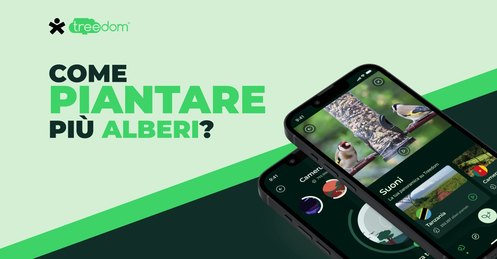
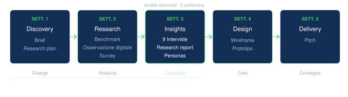
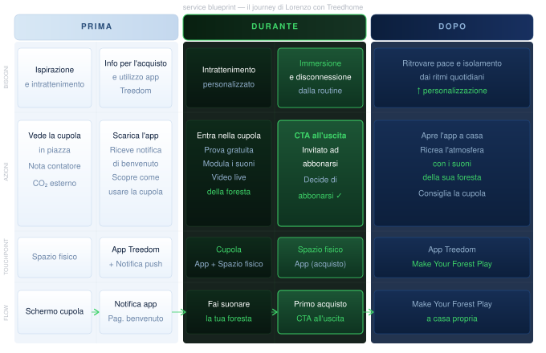

Sustainability · UX Research · Concept Design
Un'esperienza fisica immersiva per ridare peso emotivo a un gesto digitale — e trasformare utenti passivi in ambasciatori del rimboschimento

Contesto
Treedom è una delle principali piattaforme di rimboschimento al mondo: permette di piantare e adottare alberi reali in aree a rischio deforestazione, con l'obiettivo di raggiungere 10 milioni di alberi entro il 2025.
Il problema: regalare un albero ha perso valore emotivo negli anni. Un'azione digitale astratta, distante geograficamente, difficile da percepire come reale. La piattaforma ne risente direttamente — serviva una soluzione disruptive, non un redesign incrementale.
La sfida
La sfida non era migliorare l'interfaccia — era recuperare la tangibilità di un'azione che il digitale aveva reso troppo astratta. Un albero piantato a 10.000 km di distanza non si vede, non si sente, non si ricorda.
Processo
Ho collaborato in team applicando la metodologia Double Diamond: divergenza nella fase di ricerca, convergenza nella sintesi degli insight, poi ideazione e prototipazione. Ogni fase ha informato la successiva — il concept è costruito su dati reali, non su intuizioni.

Ricerca
Abbiamo condotto un benchmark esteso — competitor, casi di successo nella sostenibilità e referenze disruptive da altri settori — per capire cosa genera davvero engagement emotivo.
Le 9 interviste semi-strutturate con utenti target hanno restituito pattern comportamentali e motivazionali che nessun dato quantitativo avrebbe rivelato.
Insight chiave
Persona
Content designer, early adopter per natura. Ama la tecnologia ma soffre i lati oscuri di una vita troppo digitale: stress, dipendenza, blocchi creativi. Il suo antidoto sono i momenti di isolamento e contatto con la natura — che cerca sempre più attivamente.
La visione
Treedhome è una struttura fisica itinerante: una cupola immersiva che replica l'esperienza sensoriale di una foresta reale — suoni spaziali, fragranze integrate, pareti LED con video live delle foreste dove gli utenti hanno piantato i loro alberi.
Non è solo un'installazione. È il touchpoint fisico che trasforma un gesto digitale astratto in un'esperienza memorabile — e converte visitatori curiosi in sostenitori attivi del rimboschimento.

Prototipo 01
All'interno della cupola l'utente è avvolto da suoni spaziali, profumi naturali e video live delle foreste reali dove Treedom pianta alberi ogni giorno. Non una simulazione: un collegamento autentico alla natura.
La prima esperienza è gratuita e guidata dall'app. Al termine, una CTA naturale invita a sbloccare i suoni anche a casa — primo passo verso la conversione.

Prototipo 02
"Make Your Forest Play" estende l'esperienza Treedhome oltre la cupola. Gli utenti abbonati ascoltano i suoni reali delle foreste dove hanno piantato i propri alberi — costruendo un ambiente sonoro personalizzato nel quotidiano.
L'interfaccia è componibile: ogni utente crea la propria sinfonia naturale scegliendo foresta, stagione e intensità. Un prodotto digitale con impatto emotivo concreto — e un motivo per tornare ogni giorno.

Next Step


Learnings
Prossimo progetto